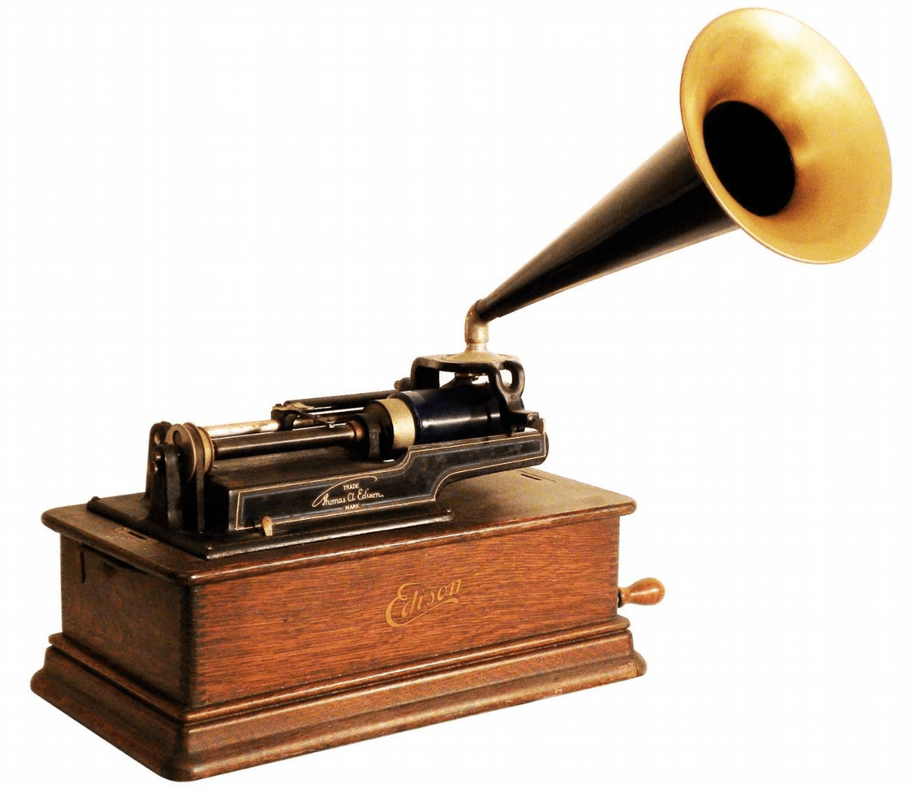
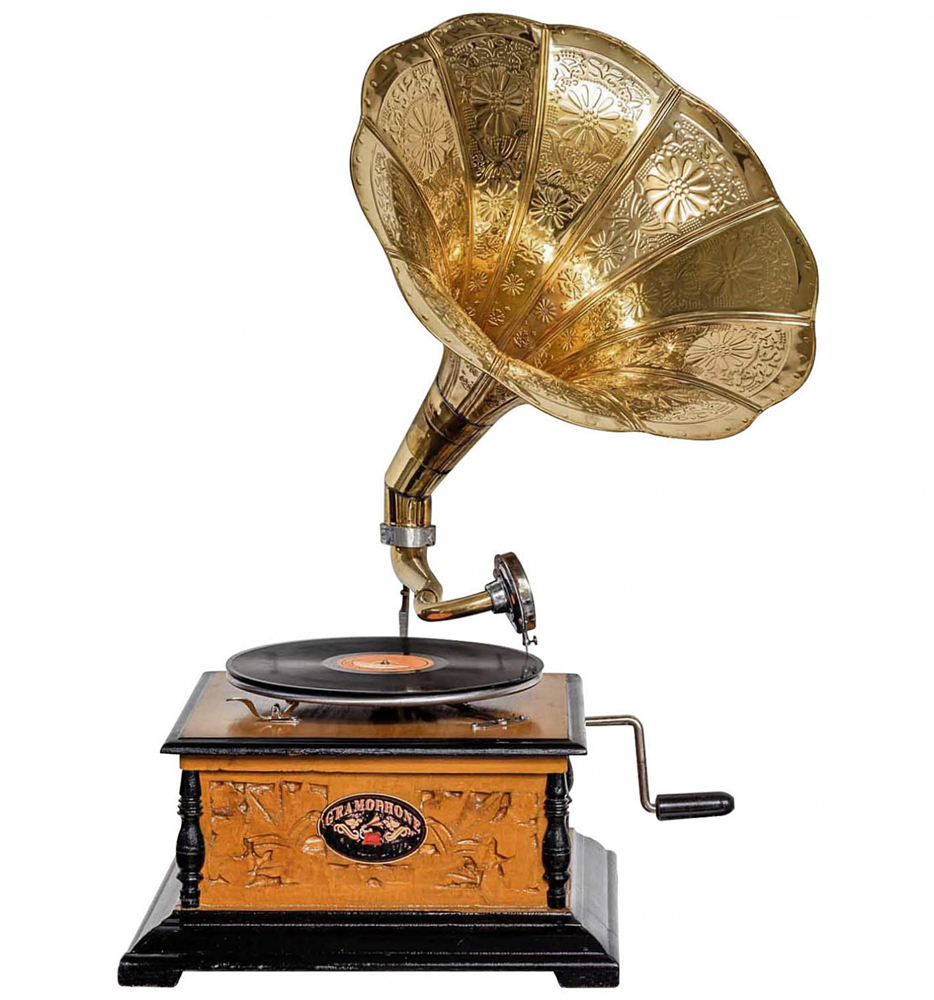

1.11 Развитие звуковоспроизводящих систем. Состав и назначение. Конструкция. Принцип работы. Технические характеристики.
Эволюция звуковоспроизводящих систем была очень интересной и впечатляющей. Вот некоторые ключевые моменты в развитии звука и аудио технологий:
1.фонограф:
В 1877 году Томас Эдисон изобрел фонограф, который был одним из первых устройств для записи и воспроизведения звука. Фонограф использует вращающийся валик и иглу для чтения звуковых волн на фонографической пластинке;

2.граммофон:
В начале 20 века граммофон стал популярным устройством для воспроизведения музыки. Он использовал диафрагму и иглу для воспроизведения звука с грамофонной пластинки;

3.ламповые усилители:
В 1920-х - 1950-х годах звуковоспроизводящие системы использовали ламповые усилители для усиления и воспроизведения звука. Лампы обеспечивали теплый и приятный звук;